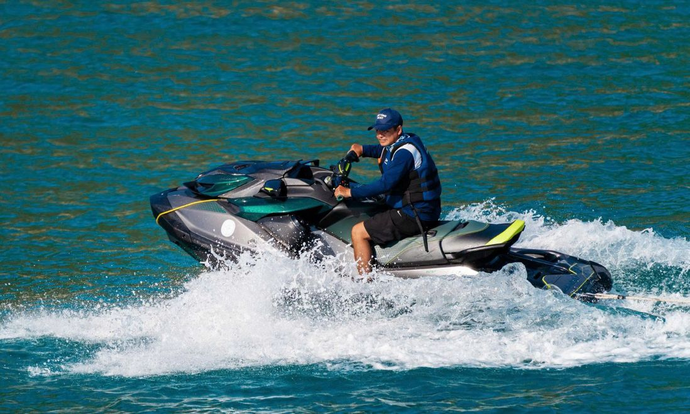
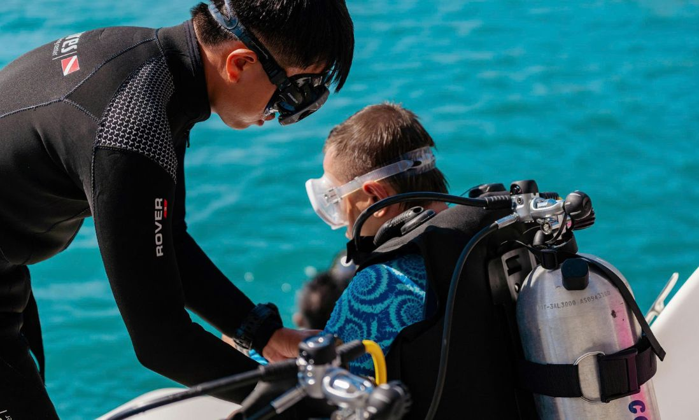
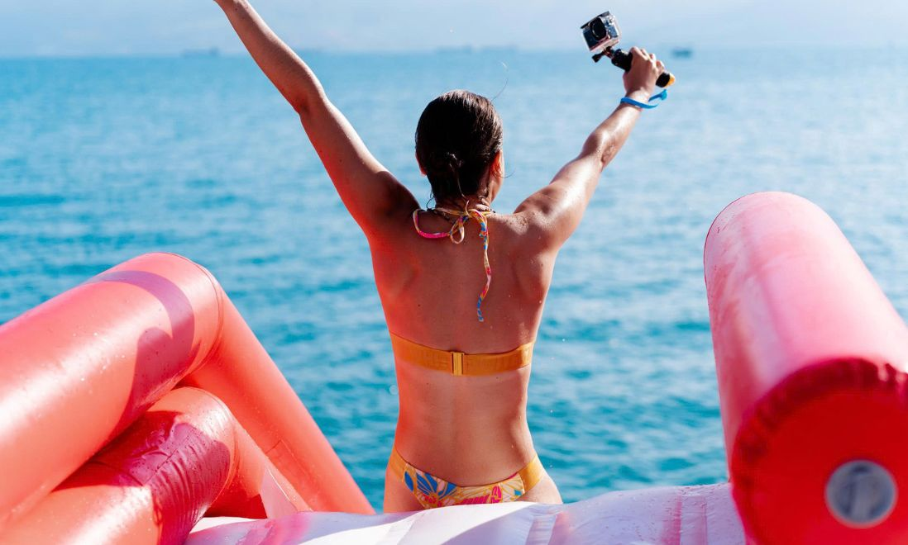
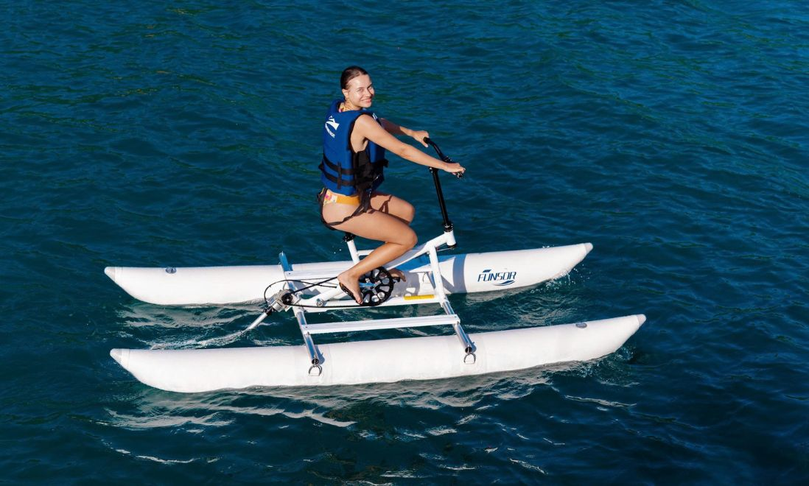
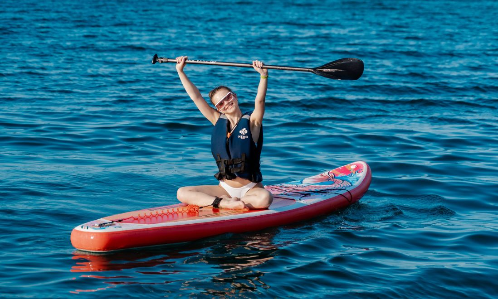
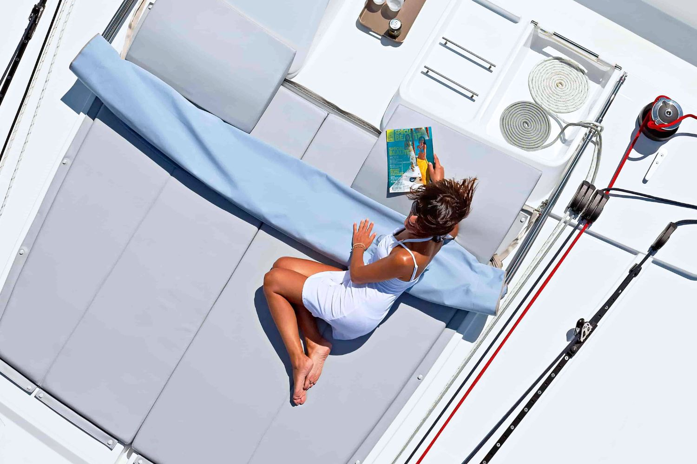

Sunrise Charter · 9:00–14:00
Прозрачное утро, штиль ☀️
Спокойная вода и мягкое солнце: лучшее время для снорклинга, SUP и обеда на палубе.


Арендуйте целиком парусный катамаран или яхту Princess для компании 5–42 человек. Чилл на палубе, снорклинг, SUP и охота за закатом 🌅 — трансфер из отеля, еда и напитки уже включены.
Данные о погоде: Open-Meteo · Только для справки — маршрут определяет капитан по фактическим условиям.

Видео с канала Leo Yacht Tour VN. Нажмите «плей», чтобы смотреть — просмотры засчитываются каналу. Ничего не запускается само.
При частной аренде вы платите за яхту, а не за человека: вся яхта только для вашей компании. Мы поможем выбрать яхту, забронируем дату и возьмём на себя всё общение с командой Theia Yachting.
Мы — партнёр-агент по продаже туров Theia Yachting. Яхты и сервис на борту обеспечивает Theia; фото, характеристики и цены взяты с theiayachting.com.
 Фукуок
ФукуокПарусный катамаран 1360 – Coral II — просторный катамаран для частной аренды в водах Фукуока.
ФукуокLuxury Sailing Catamaran 1580 – Onyx — комфортная частная прогулка у берегов Фукуока: много пространства, современный дизайн и внимательный сервис для полного отдыха на море.
ФукуокLagoon 450 F – Azure — просторный и элегантный парусный катамаран для частных морских прогулок у Фукуока.
 Нячанг
НячангМоторная яхта Merry Fisher 795 – Jade — отличный выбор для тех, кто любит камерные приватные прогулки и хочет провести день на море максимально расслабленно.
 Нячанг
НячангСкоростная яхта Titan — просторная моторная яхта для комфортных морских прогулок и быстрых переходов между островами Вьетнама.
 Нячанг
НячангПремиальный 13,6-метровый катамаран для тех, кто ценит приватность, комфорт и по-настоящему расслабленный отдых на море.
НячангLuxury Sailing Catamaran 1460 – Blue — премиальная частная аренда в Нячанге: стильный дизайн, современные технологии и комфорт катамарана высокого класса.
 Нячанг
НячангLuxury Motor Yacht V40 – Pearl — идеальный вариант для дня на море в приватной, уютной и изысканной обстановке.
 Нячанг
НячангПарусный катамаран 1160 Lite – Silver — идеальный выбор для спокойного дня на море в приватной и стильной обстановке.
 Нячанг
НячангPrincess 56 – Diamond — просторная моторная яхта с флайбриджем для частных прогулок в Нячанге, отдыха на море с семьёй и друзьями, праздников и закрытых мероприятий.
Цены в USD по данным theiayachting.com на 20.11.2026, за 5-часовую прогулку на полдня, за всю яхту (не с человека). Цены на целый день (10 ч) и в донгах: по запросу.
Спокойная вода и мягкое солнце: лучшее время для снорклинга, SUP и обеда на палубе.
Выходим после обеда, купаемся, когда солнце мягче, и встречаем закат на носовой сетке.

Больше времени на маленькие острова, водные активности и долгие обеды с близкими.

На Coral II и Onyx (Фукуок) в вечерний тур включён фейерверк.

Предложение руки и сердца, день рождения, корпоратив — Theia составит маршрут под вашу компанию.
Активности, которые Theia Yachting организует на борту. Снорклинг, SUP и рыбалка включены на большинстве яхт.
 Снорклинг
Снорклинг
Гидроцикл Рыбалка
Рыбалка
Дайвинг с аквалангом
Надувная водная горка
Водный велосипед
SUP-борд Прыжки в море
Прыжки в море Буксируемый «банан»
Буксируемый «банан»Гидроцикл, дайвинг, «банан»… могут быть доп. услугами — стоимость уточняется при бронировании.
Цена за яхту, без подсадки чужих. Итоговую стоимость и условия мы присылаем письменно до внесения депозита.
От Merry Fisher на 5 гостей до катамарана Onyx на 42 гостя: парусные катамараны, яхты Princess и скоростная яхта.
Трансфер из отеля, еда и напитки, фрукты, полотенца, SUP, снаряжение для снорклинга и рыбалки — на большинстве яхт.
Подберём яхту под размер компании и повод и поможем — от первого вопроса до посадки на борт.

— Theia Yachting
Парусный катамаран 1360 – Coral II, парусный катамаран 1580 – Onyx, катамаран Lagoon 450F – Azure. Точка отправления зависит от яхты и программы — уточняется при бронировании. Офис Theia: Meyhomes Capital, 42 Hai Duong, Фукуок, провинция Анзянг.
Открыть карту →
Отправление из марины Ana Marina Nha Trang, 01 Nguyen Co Thach, район Бак Нячанг, провинция Кханьхоа — главный офис Theia Yachting.
Открыть карту →Мы не публикуем фейковые отзывы. Публичные отзывы гостей Theia Yachting — на официальном сайте Theia.
С 15:00 до 20:00 — Sunset Charter на катамаране 1360 – Coral II: ветер, море, ужин на палубе и вечерний фейерверк.

Четыре вопроса, которые помогут выбрать из 10 яхт Theia Yachting: сколько вас, куда, какие ощущения нужны и какой бюджет.

Короткий чек-лист для прогулки на 5 или 10 часов: что уже подготовила Theia, а что лучше взять с собой.
Ответы основаны на информации, опубликованной Theia Yachting. Пункты с пометкой Уточняется у агента — общая информация, детали мы подтвердим при бронировании.
Выбирайте Sunset Charter 15:00–20:00 (5 часов): выход после обеда, купание на мягком солнце и закат с носовой сетки. На Фукуоке сейчас 3 яхты: Coral II (до 28 гостей, $1490 / 5 ч), Onyx (до 42 гостей, $1590 / 5 ч) и Lagoon 450F – Azure (до 15 гостей, $2690 / 5 ч). На Coral II и Onyx в вечерний тур включён фейерверк.
Яхты на сайте принадлежат и обслуживаются Theia Yachting (theiayachting.com). Мы — партнёр Theia по бронированию: консультируем, бронируем дату и всегда на связи в WhatsApp. За саму прогулку, капитана и экипаж отвечает Theia Yachting.
Theia предлагает частную аренду яхт и групповые морские прогулки. Можно выбрать 5-часовой маршрут, аренду на целый день или индивидуальную программу. Во флоте есть парусные катамараны и моторные яхты — от прогулок для пар до вечеринок и мероприятий для больших компаний.
Популярные слоты по данным Theia:
Расписание может меняться в зависимости от яхты, погоды и ваших пожеланий.
Цена частной аренды — за всю яхту, а не с человека. Яхта только для вашей компании, без чужих гостей. Текущие цены (полдня, 5 часов): от $590 (Merry Fisher 795 – Jade) до $2990 (Princess 56 – Diamond). Цены на целый день и в донгах — напишите нам, рассчитаем точно.
Зависит от яхты, но в большинство прогулок входит:
На некоторых яхтах есть надувная горка, водные велосипеды, фейерверк в вечерний тур (Coral II, Onyx) или личный шеф-повар на борту (Lagoon 450F – Azure). Смотрите раздел «Включено» на странице каждой яхты.
Theia проводит прогулки в Нячанге и на Фукуоке. В Нячанге яхты отправляются из марины Ana Marina Nha Trang (01 Nguyen Co Thach, район Бак Нячанг, Кханьхоа). На Фукуоке точка отправления зависит от выбранной яхты и программы — мы сообщим её при подтверждении брони.
Сейчас на Фукуоке 3 яхты: Парусный катамаран 1360 – Coral II (до 28 гостей, $1490 / 5 ч), Парусный катамаран 1580 – Onyx (до 42 гостей, $1590 / 5 ч) и Катамаран Lagoon 450F – Azure (до 15 гостей, $2690 / 5 ч).
Зависит от яхты: самая маленькая — Merry Fisher 795 – Jade (до 5 гостей), самая большая в текущем списке — Onyx (до 42 гостей). По словам Theia, флот обслуживает группы от 1 до 48 человек. Напишите, сколько вас и какой повод, — подберём подходящую яхту.
Заполните форму «Бронирование» или напишите нам в WhatsApp: желаемая дата, число гостей, слот (утро / закат / целый день) и понравившаяся яхта. Мы проверим наличие у Theia и пришлём подтверждение с инструкцией по оплате.
В политике конфиденциальности Theia указана оплата картой через платёжный шлюз OnePay. Размер депозита, реквизиты для перевода и сроки оплаты сообщаются при подтверждении брони.
Общая информация — уточняйте у Theia до бронирования
По словам Theia, маршрут может корректироваться по погоде. Конкретные условия отмены, переноса и возврата на сайте не опубликованы — пожалуйста, уточните у нас до внесения депозита, чтобы получить условия письменно.
Общая информация — уточняйте у Theia до бронирования
Да. Theia рекомендует большие яхты Coral II и Onyx для дней рождения, свадеб и корпоративов; на Princess 56 – Diamond и Princess V40 – Pearl есть индивидуальное меню еды и напитков. Декор, торт, фотограф… сообщите заранее — рассчитаем отдельно.
Общая информация — уточняйте у Theia до бронирования
Прогулки подходят для семей (Theia рекомендует многие яхты «для семей и компаний друзей»). На скоростной яхте Titan спасательные жилеты указаны во включённом; для других яхт уточните наличие детских жилетов при бронировании. Те, кто не плавает, могут отдыхать на палубе.
Общая информация — уточняйте у Theia до бронирования
Theia перечисляет активности: снорклинг, гидроцикл, рыбалка, дайвинг, надувная горка, водный велосипед, SUP, прыжки в море, «банан». Снорклинг, SUP и рыбалка включены на большинстве яхт; гидроцикл, дайвинг и «банан» обычно доп. услуги — точную стоимость нужно уточнить.
Общая информация — уточняйте у Theia до бронирования
Общий совет: двухкорпусные катамараны (Coral, Coral II, Blue, Silver, Onyx, Azure) Theia описывает как «устойчивые двухкорпусные», на якоре они обычно качаются меньше. Выбирайте утренний слот, лёгкий перекус перед выходом и возьмите таблетки от укачивания. Это общий совет, а не медицинская рекомендация.
Общая информация — уточняйте у Theia до бронирования

Напишите дату, число гостей и слот — мы проверим наличие у Theia Yachting и пришлём подтверждение с итоговой ценой. Быстро и просто в WhatsApp ⚡
 Отсканируйте, чтобы написать Leo - Yacht Tour в WhatsApp
Отсканируйте, чтобы написать Leo - Yacht Tour в WhatsAppТекст уже скопирован. Откройте WhatsApp и вставьте его, чтобы отправить нам 💬